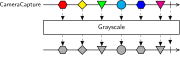
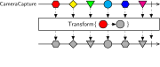
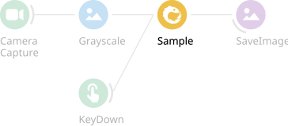
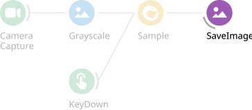
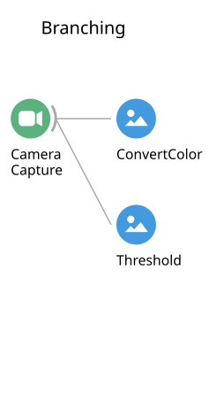
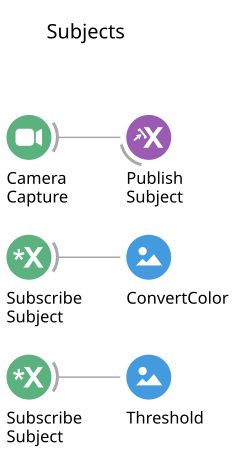
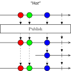
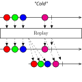

### Introduction to Bonsai and Harp Visual Reactive Programming Andrew Erskine (NeuroGEARS) Homerton College, Cambridge — 4th August 2026 --- ### Outline * What is Bonsai? * Reading a workflow * Reactive operators * Higher-order operators * Harp Note: Consolidated from three separate lectures. The appendix at the end holds the full operator reference — leave it for questions. --- ### In a perfect world  All our data arrives at one synchronized device. --- ### In reality A mesh of multi-purpose asynchronous devices. Note: This is the problem Bonsai exists to solve. Every one of these has its own clock, its own driver, its own idea of when "now" is. --- ### What is Bonsai?  --- ### [Marble diagrams](https://bonsai-rx.org/docs/articles/observables.html)  Note: Time runs left to right. Each marble is a value arriving on the stream. --- <!-- .slide: data-transition="none" --> ### Marble diagrams   Note: A sequence can also terminate — successfully, or with an error. --- <!-- .slide: data-transition="none" --> ### Marble diagrams  Note: An operator takes one sequence and returns another. That is the whole algebra. --- ### Reading a workflow <div class="pair"> <p></p> </div> Note: Every workflow you build has a marble diagram behind it. Get comfortable moving between the two representations. --- <!-- .slide: data-transition="none" --> ### Reading a workflow <div class="pair"> <p></p> </div> --- <!-- .slide: data-transition="none" --> ### Reading a workflow <div class="pair"> <p></p> </div> Note: Now two sources. The second one decides *when* we take a value from the first. --- <!-- .slide: data-transition="none" --> ### Reading a workflow <div class="pair"> <p></p> </div> Note: A sink does something with each value and passes it through untouched. --- ### The editor  --- ### The ecosystem  Note: Everything is a package. Almost nothing in the box is required. --- ### Reactive operators  Note: Four broad families. The appendix has one diagram per operator. --- ###### Zip  Note: Pairs values one-for-one, waiting for both. This is the operator people reach for when they mean synchronisation. --- ###### CombineLatest  Note: Emits on *either* input, pairing with the most recent value of the other. --- ###### WithLatestFrom  Note: Asymmetric — only the left stream drives output. Usually what you actually want in a closed-loop rig. --- <!-- .slide: data-transition="none" --> ###### Transform  --- <!-- .slide: data-transition="none" --> ###### Select  --- ###### SelectMany  Note: Here is the jump: the function returns a *sequence*, not a value. One value in, a whole stream out — and they get flattened together. --- ###### SelectMany: play audio on cue  --- <!-- .slide: data-transition="none" --> ###### SelectMany: play audio on cue  Note: Each cue spawns its own independent playback sequence. --- ### Sharing sequences <div class="pair"> <p></p> <p></p> </div> Note: Branching subscribes twice — two cameras, two files. Publishing shares one subscription between both branches. --- ### Hot vs cold  Note: Cold: each subscriber gets its own private sequence. Hot: everyone shares one. This is the single most common source of "why is my camera opening twice?" --- ### Publish and Replay <div class="pair"> <p></p> <p></p> </div> --- ###### Buffer  --- ###### Buffer: moving average  --- ###### WindowTrigger  Note: A window is a sequence of sequences — the higher-order idea again. --- ###### WindowTrigger: record a triggered clip  Note: Probably the most directly useful workflow in this deck. --- ### Higher-order operators  Note: First-order approach: fine for one file. Now do it for a folder of two hundred. --- ### Higher-order operators  Note: Enumerate the file names, turn each into a sequence of frames, concatenate the sequences. The count of files stops mattering. --- ### Representing discrete states  Note: State is extended, an event is punctate. A state becomes a *sequence* that lives between two events — which is how trial structure gets built tomorrow. --- ### Introduction to Harp  [harp-tech.org](https://harp-tech.org/) Note: This is where the Harp talk begins — folded into the end of this deck rather than being a separate session. --- ### Synchronisation is hard * Different devices operate on isolated clocks * We can synchronise by passing 'markers' between devices * The difficulty of interpreting these markers scales supralinearly with number of devices --- ### What Harp does about it * Shares a clock signal between devices * Explicitly attaches timestamps to samples * Reports events asynchronously --- ### Harp is open source * The devices, the protocol, and the firmware * You can build your own device on the protocol * It then synchronises natively with every other Harp device --- ### The Hobgoblin [Hobgoblin](../../hobgoblin/index.html) --- ### Questions? [Worksheets](../../worksheets/index.html) Note: Then straight into the hands-on portion. --- ## Appendix Operator reference — for questions. --- ###### Skip  --- ###### Take  --- ###### SkipUntil  --- ###### TakeUntil  --- ###### Repeat  --- ###### Delay  --- ###### BufferTrigger  --- ###### BufferTrigger: signal snapshot  --- ###### Window  --- ###### Merge  --- ###### Concat  --- ###### Merge (sequences)  --- ###### Concat (sequences)  --- ###### Switch  --- ### Subject scope  --- ### Subject types  --- ### Enumerate files  --- ### Create observable  --- ### Concat sequences